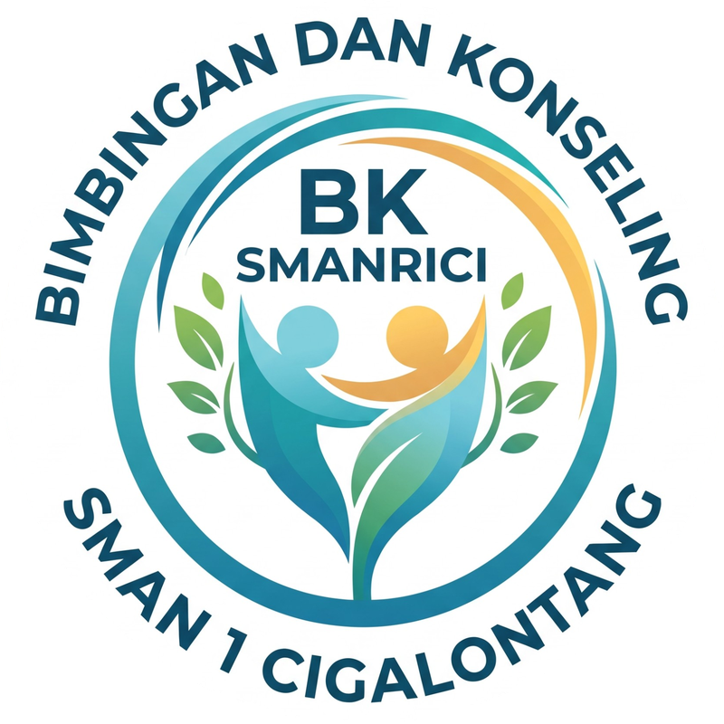

BK SMANRICI
#JumatNgobrolBK
6 NOVEMBER · HARI TERAKHIR TKA
Kakak XII,
kalian
keren!
🎉
Pesan dari adik kelas & Ruang BK untuk kalian.
"Makasih udah jadi contoh buat kami. Semoga hasilnya yang terbaik, Kak!" 🌟
— NISA, KELAS XI
"Istirahat dulu, Kak. Udah sampai sini aja kalian hebat!" 💪
— RAKA, KELAS X
"Apa pun hasilnya, usaha kalian sudah berarti. Ruang BK siap jadi teman ngobrol soal langkah berikutnya." 🤍
— BU GURU BK
Adik kelas, tulis pesanmu di komentar 👇
Kakak XII, tag dirimu!
BK SMANRICI
#JumatNgobrolBK
ADD YOURS · ADIK KELAS X & XI
Pesan untuk
Kakak XII
💌
Tulis semangatmu, tag kakak kelasmu!
PESANKU UNTUK KAKAK XII:
— dari: ____________
Taruh stiker
Add Yours
di sini
atau tag kakak kelasmu 🏷️